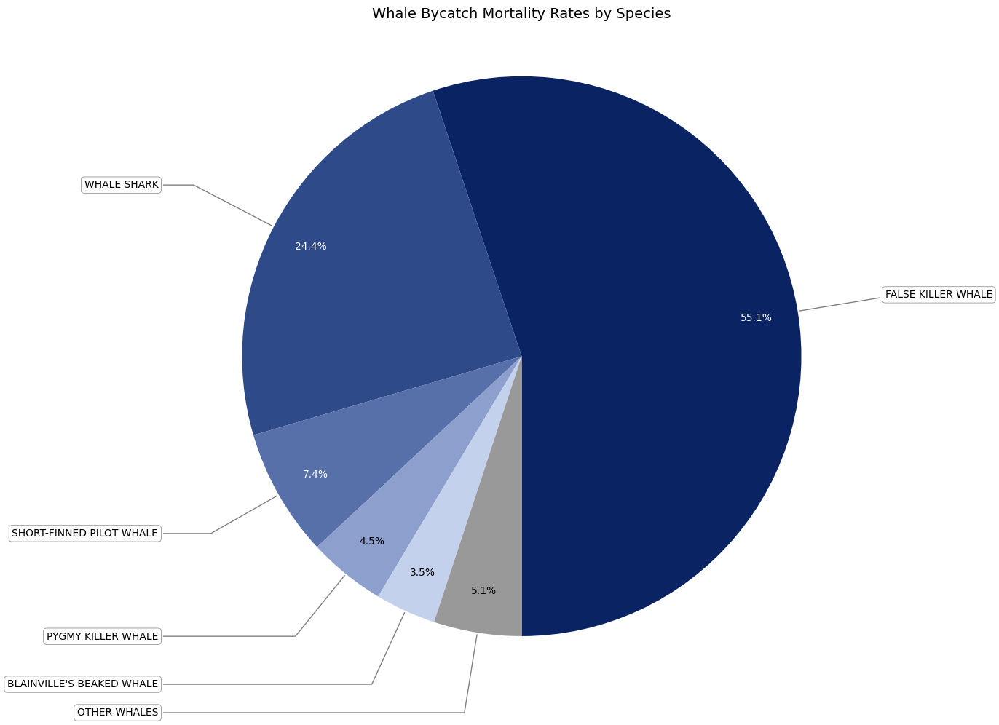

import pandas as pd
import matplotlib.pyplot as plt
import numpy as np
# Load and process data
df = pd.read_csv('../data/table5_whale-only_bycatch_data.csv')
mortality_by_species = df[df['Observed Mortality rate (per set)'] > 0].groupby('Species (or group)')['Observed Mortality rate (per set)'].sum()
sorted_species = mortality_by_species.sort_values(ascending=False)
# Take top 6 and sum the rest into "Other Whales"
top_5 = sorted_species.head(5)
other_whales = pd.Series({'OTHER WHALES': sorted_species[5:].sum()})
combined_data = pd.concat([top_5, other_whales])
# Custom colors
colors = [
"#0a2463", "#2E4A88", "#5770A9", "#8D9FCC", "#C3D1EC", # Top 5
'#999999' # "Other Whales"
]
# Create pie chart with rotation and leader lines
plt.figure(figsize=(14, 10))
wedges, texts, autotexts = plt.pie(
combined_data,
labels=None, # Disable default labels (we'll add them manually)
autopct='%1.1f%%',
startangle=270,
colors=colors,
pctdistance=0.85,
textprops={'fontsize': 10, 'ha': 'center', 'va': 'center'}
)
for wedge, autotext in zip(wedges, autotexts):
if wedge.get_facecolor()[0] > 0.5: # Light-colored wedge
autotext.set_color('black')
else: # Dark-colored wedge
autotext.set_color('white')
# Add leader lines and custom labels
bbox_props = dict(boxstyle="round,pad=0.3", fc="white", ec="gray", lw=0.5) # Label box style
for i, (wedge, label) in enumerate(zip(wedges, combined_data.index)):
# Calculate label angle (midpoint of the wedge)
ang = (wedge.theta2 - wedge.theta1) / 2. + wedge.theta1
y = np.sin(np.deg2rad(ang)) # Polar to Cartesian
x = np.cos(np.deg2rad(ang))
horizontalalignment = {-1: "right", 1: "left"}[int(np.sign(x))]
connectionstyle = f"angle,angleA=0,angleB={ang}"
# Place labels outside the pie with leader lines
plt.annotate(
label,
xy=(x, y),
xytext=(1.3 * np.sign(x), 1.3 * y),
horizontalalignment=horizontalalignment,
bbox=bbox_props,
arrowprops=dict(
arrowstyle="-", # Solid line
connectionstyle=connectionstyle,
color="gray"
)
)
# Title and formatting
plt.title('Whale Bycatch Mortality Rates by Species', pad=30, fontsize=14)
plt.axis('equal')
plt.tight_layout()
plt.show()
